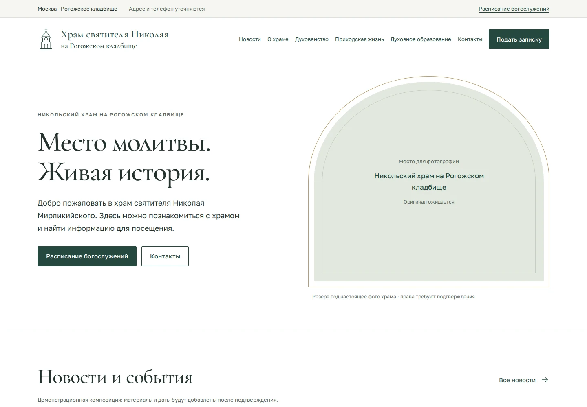
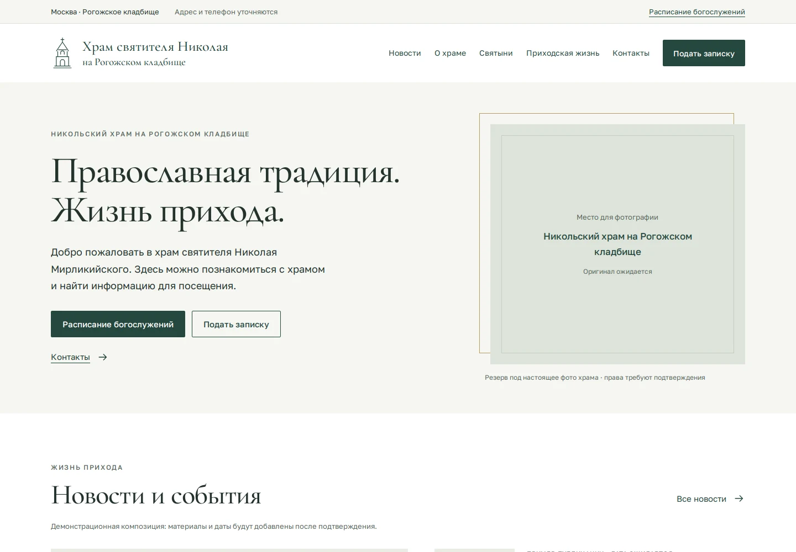
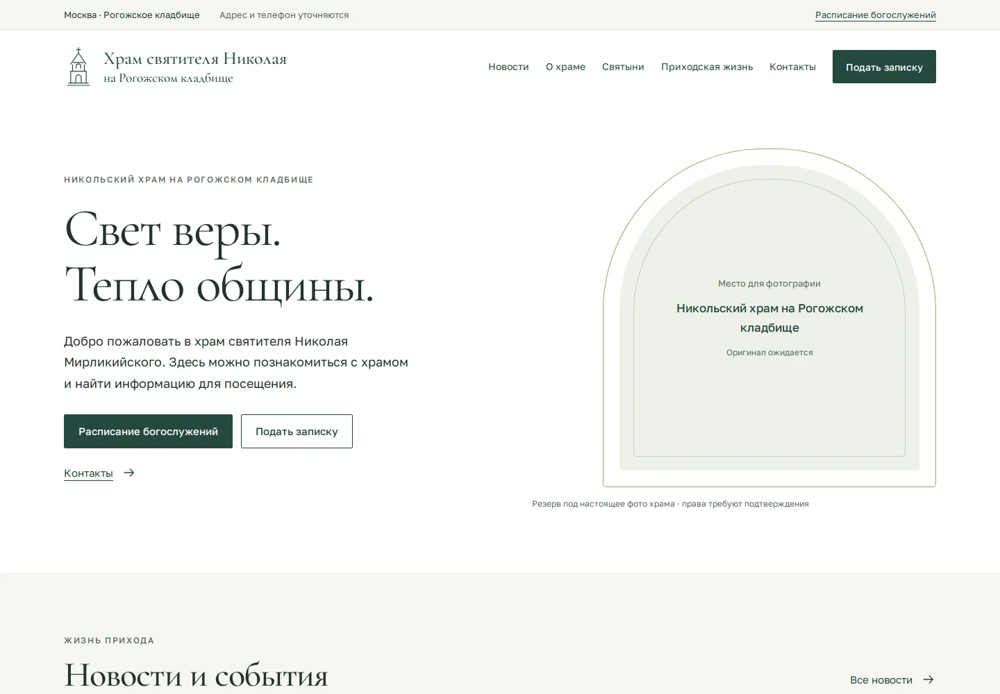

Архитектурная элегантность

Высокая арка, строгий редакционный ритм и тонкие архитектурные линии. Спокойный баланс истории и практических действий.
Открыть концепцию 01Три направления · один приход
Три полные адаптивные главные страницы. Откройте каждую, сравните композицию и выберите основу для следующего этапа.

Высокая арка, строгий редакционный ритм и тонкие архитектурные линии. Спокойный баланс истории и практических действий.
Открыть концепцию 01
Геометричная рама, ведущая публикация и выразительная зелёная полоса истории. Более собранная информационная подача.
Открыть концепцию 02
Округлые окна, открытые строки новостей и мягкий ритм пространства. Самое воздушное и светлое направление.
Открыть концепцию 03Выберите вариант и ширину. На узком экране широкий предпросмотр можно прокрутить горизонтально внутри рамки.